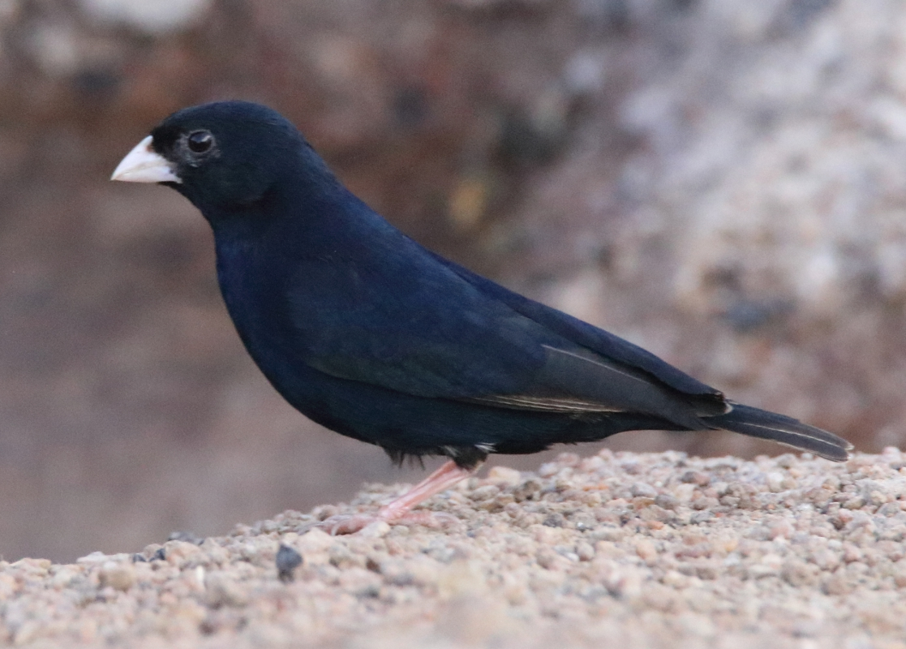

From: Nate Dias <offshorebirder@gmail.com>
Date: 2017-06-21 17:06
Subject: Variable / Purple Indigobird in the Trans Mara (photos)
I just received some photos Roger Smith took of a roadside Indigobird
we saw with Ben Mugambi in the Trans Mara back in late January when
things were so dry. It looks to be Variable / Purple Indigobird but
I would welcome correction by anyone better versed in Indigobird
identification.
I'm also wondering if the hue is blue enough to call it a Variable
Indigobird, though I know how subjective things like blue sheen can
be...
Unfortunately my camera was packed away at the time. Roger's was too
for the Bar-breasted Firefinch we saw just before the Indigobird.
But he scrambled to unpack his camera just in time for the second
find.
Attached are a few cropped photos.
Good birding,
Nate
PS
The (male) Bar-breasted Firefinch had a striking pattern around the
undertail coverts. Sort of cream-coloured undertail coverts with a
thin darker border then the light grey/brown of the bird's vent and
flanks. I will post something about them soon, as I am wondering if
their different appearance from Red-billed Firefinch is a valid field
mark for separating the two species.
